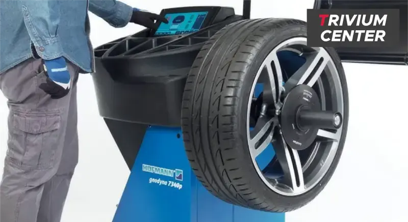

En Argentina, muchas gomerías de barrio se enfocan exclusivamente en reparaciones básicas de neumáticos, como parches y cambios. Sin embargo, el mercado automotriz muestra una demanda creciente de servicios más especializados, como alineación y balanceo. Este salto representa una progresión lógica para quienes buscan ampliar su negocio, mejorar su rentabilidad y destacarse frente a la competencia. En este artículo, analizaremos los aspectos clave para abrir un taller de alineación y balanceo exitoso.
1. ¿Por qué agregar servicios de alineación y balanceo?
Ofrecer alineación y balanceo no solo aumenta el ticket promedio de cada cliente, sino que también mejora la reputación del negocio al posicionarlo como un referente en el cuidado integral de los neumáticos y el vehículo. Además:
- Demanda en crecimiento: Los conductores buscan cada vez más servicios completos en un solo lugar.
- Mayor rentabilidad: Estos servicios tienen un margen de ganancia superior al de los parches y reparaciones básicas.
- Valor agregado: Mejora la fidelización al ofrecer un servicio que extiende la vida útil de los neumáticos y mejora la seguridad del vehículo.
2. Infraestructura y equipamiento necesario
Abrir un taller de alineación y balanceo requiere más espacio e inversión que una gomería tradicional. A continuación, detallamos los aspectos clave:
Espacio físico:
- Tamaño del local: Necesitarás un espacio amplio para trabajar con comodidad. Una bahía para alineación requiere entre 5 y 7 metros de longitud.
- Zona de espera: Un espacio cómodo para los clientes mejora la experiencia.
Equipamiento esencial:
- Alineadora de ruedas: Es el corazón del taller. Optá por tecnologías modernas como alineadoras 3D para mayor precisión.
- Balanceadora de neumáticos: Asegura un correcto equilibrio en las ruedas.
- Herramientas auxiliares: Llaves de impacto, gatos hidráulicos y calibradores de neumáticos.
- Compresor de aire: Fundamental para el funcionamiento de varias herramientas.
3. Conocimientos y capacitación
Incorporar servicios de alineación y balanceo requiere conocimientos técnicos que van más allá de las reparaciones básicas. Es fundamental:
- Capacitar al personal: Asegurate de que tus empleados comprendan cómo operar los equipos y realizar diagnósticos precisos.
- Actualización constante: La tecnología automotriz evoluciona rápidamente, por lo que es clave mantenerse al día con las tendencias del mercado.
Existen cursos específicos para alineación y balanceo, tanto presenciales como online, ofrecidos por fabricantes de maquinaria o instituciones técnicas.
4. Estrategias de marketing para atraer clientes
Un taller de alineación y balanceo debe destacarse en un mercado competitivo. Algunas estrategias efectivas incluyen:
Promociones iniciales:
- Ofrecé descuentos en servicios de alineación y balanceo para los primeros clientes.
- Creá combos con otros servicios, como cambio de neumáticos y calibración.
Presencia online:
- Perfil de Google My Business: Permití que los clientes te encuentren fácilmente, incluyendo fotos del taller y reseñas positivas.
- Redes sociales: Publicá casos de éxito y explicá los beneficios de la alineación y el balanceo.
Alianzas estratégicas:
- Trabajá en conjunto con concesionarias o empresas de transporte local para ofrecer tus servicios.
Conclusión
Transformar una gomería tradicional en un taller de alineación y balanceo es un paso natural para quienes buscan crecer en el sector automotriz. Si bien requiere una mayor inversión y espacio, las oportunidades de negocio son significativas. Con el equipamiento adecuado, personal capacitado y estrategias de marketing efectivas, podés posicionarte como líder en tu comunidad y garantizar el éxito a largo plazo.